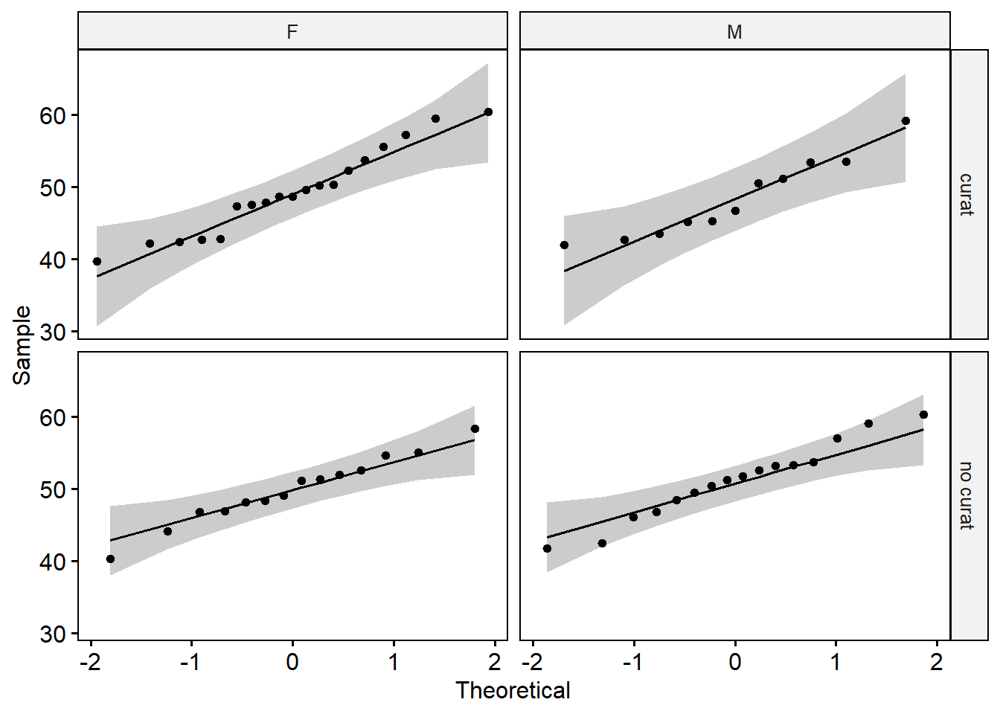

Pràctica 4. Testos d’igualtat de mitjanes per més de dues poblacions: ANOVA de dos factors i ANOVA per mesures repetides
Objectius de la pràctica
Els objectius principals de la pràctica són:
Manipulació de data.frames (filtrar files segons diferents criteris)
Aplicar testos de comparació de mitjanes per més de dues poblacions (ANOVA) en funció de dos factors
Anàlisi de l’expressió longitudinal d’un gen en més de dos temps
Comprovar els supòsits de normalitat i homocedasticitat
Compendre les hipòtesis estadístiques associades a aquests testos i prendre decisions a partir dels seus resultats
Visualitzar de manera adequada dades en contextos de dissenys longitudinals
Relacionar les hipòtesis científiques plantejades inicialment amb els resultats estadístics
1. Importar dades a R
Crea un nou RMarkdown anomenat “Practica4” i guarda’l a la carpeta de Pràctiques.
- Crea un nou chunk que inclogui les diferents llibreries que utilitzarem durant la pràctica:
- En un altre chunk defineix el teu directori de treball i carrega les dades (metadades: practR_metadades.csv i abundàncies de gens (filtrat): practR_rnadata_filt.csv)
# carregar dades
metadata <- read.csv2("dades/practR_metadades.csv", dec = ",", row.names = 1)
data <- read.csv2("dades/practR_rnadata_filt.csv", dec = ",", row.names = 1)Combina en un sol data.frame les dues matrius de dades (anomena’l
df):Fes les transformacions necessàries:
Guarda el data.frame df a la carpeta de dades amb el nom de
“practR_dades.csv” (busca a les pràctiques anteriors com exportar
fitxers de R a l’ordinador). D’aquesta manera només caldrà carregar
un sol fitxer per les properes pràctiques.
2. Comparació de l’expressió gènica en funció de dos factors
L’expressió del gen 38 es pot veure afectada per la pròpia resposta al tractament (es curen/no es curen) i/o el sexe (home/dona) dels pacients?
Per poder resoldre la pregunta de recerca, caldrà comprovar si hi ha diferències significatives en l’expressió del Gen 38 entre les dues poblacions de Curats vs No Curats a temps basal, tenint en compte el seu sexe.
2.1. Selecció de mostres per l’anàlisi
- Crea un nou data.frame (
df0) només amb mostres d’expressió dels gens a temps basal.
- Ara crea un altre data.frame (
df1), a partir dedf0que inclogui només mostres de pacients amb TB curats i no curats.
ind_0_c_nc <- which(df0$Tractament == "curat" | df0$Tractament == "no curat" )
df1 <- df0[ind_0_c_nc,]- Re-defineix el factor
TractamentiIndividu(ho fem perquè sàpiga que ara ja no tenim 3 categories de Tractament, sinó que n’hi ha dues: curat i no curat. Igualment pel factor Individu)
Abans de continuar, observa les dades i comprova que has seleccionat les mostres desitjades.
2.2. Efecte de la resposta al tractament i del sexe sobre l’expressió gènica
Es vol determinar si l’expressió basal (abans de començar el tractament) del gen 38 es veu efectat pel fet de que el pacient amb TB sigui home o dona, i/o la seva reacció al tractament (si s’acaba curant o no).
Exploració de les dades
- Fes un resum (gràfic i numèric) de l’expressió del gen 38 en funció de la resposta al tractament
## curat no curat
## 49.08267 50.54300# gràfic
ggboxplot(data = df1, x = "Tractament", y = "Gen_38",
add = "jitter") # fixa't que aquest argument afegeix al gràfic cada una de les mostres (punts)
Fes un resum (gràfic i numèric) de l’expressió del gel 38 en funció del sexe
- Fes un resum (gràfic i numèric) de l’expressió del gel 38 en funció del sexe i de la resposta al tractament
## F M
## curat 49.42632 48.48909
## no curat 49.90786 51.09875
Interpreta els gràfics i explica quin resultat esperaries.
Anàlisi estadística
Per analitzar l’efecte de dos factors (e.g., resposta al tractament i sexe) sobre una variable numèrica (e.g., expressió del gen 38) s’ha de realitzar una ANOVA de dos factors.
Les hipòtesis de l’ANOVA de dos factors són:
- Pel que fa a la resposta al tractament (1r factor):
\[H_0: \mu_{curat} = \mu_{no.curat}\] \[H_a: \mu_{curat} \neq \mu_{no.curat}\]
- Pel que fa al sexe (2n factor):
\[H_0: \mu_{homes} = \mu_{dones}\] \[H_a: \mu_{homes} \neq \mu_{dones}\]
- Pel que fa a la interacció entre la resposta i el sexe:
\[H_0: \text{no hi ha interacció entre el fet de curar-se (o no) i el sexe}\] \[H_a: \text{hi ha interacció entre el fet de curar-se (o no) i el sexe}\]
1r. Abans d’aplicar l’ANOVA cal comprovar els supòsits:
- Comprovar que totes mostres provenen de poblacions amb distribució normal (es comprova mitjançant el test de shapiro:
shapiro.test()).
- Comprova la normalitat dins de cada grup (e.g., no curat-dona; no curat-home; curat-dona; curat-home).
## F M
## curat htest,4 htest,4
## no curat htest,4 htest,4## [[1]]
##
## Shapiro-Wilk normality test
##
## data: X[[i]]
## W = 0.95623, p-value = 0.5007## [[1]]
##
## Shapiro-Wilk normality test
##
## data: X[[i]]
## W = 0.92625, p-value = 0.3742## [[1]]
##
## Shapiro-Wilk normality test
##
## data: X[[i]]
## W = 0.98672, p-value = 0.9971## [[1]]
##
## Shapiro-Wilk normality test
##
## data: X[[i]]
## W = 0.97266, p-value = 0.8796- Visualitza amb un QQ plot la normalitat de les dades (fes-ho amb la
funció
ggqqplot()). Les dades (de cada grup) s’ajusten a la línia?

- Conèixer si les variàncies dels grups segueixen l’homocedasticitat (es comprova mitjançant el test de Levene:
leveneTest()). Per aplicar la funcióleveneTest()hauràs de carregar la llibreriacar(ho hauries d’haver fet al principi, al primer chunk).
- Comprova l’homocedasticitat amb la funció
leveneTest()
## Levene's Test for Homogeneity of Variance (center = median)
## Df F value Pr(>F)
## group 3 0.2591 0.8545
## 56- Identificar que les dades són independents
Interpreta el resultat dels tests estadístics referents als supòsits i escriu un resum/conclusions pel que fa als supòsits de normalitat, homocedasticitat i independència de les dades.
2n. Si es compleixen els tres supòsits es pot aplicar l’ANOVA:
- Realitza l’anova de dos factors. Fixa’t en les diferències respecte l’anova d’un sol factor (Pràctica 3).
## Df Sum Sq Mean Sq F value Pr(>F)
## df1$Tractament 1 32.0 31.99 1.083 0.303
## df1$Sexe 1 0.4 0.39 0.013 0.909
## df1$Tractament:df1$Sexe 1 16.3 16.32 0.552 0.460
## Residuals 56 1654.4 29.54- Comprova la normalitat dels residus de l’anova
##
## Shapiro-Wilk normality test
##
## data: an1$residuals
## W = 0.9805, p-value = 0.4503Interpreta el resultat del test estadístic i escriu una petita conclusió referent a la pregunta de recerca.
3. Comparació de l’expressió al llarg del temps
L’expressió del gen 38 dels individus que s’acaben curant varia al llarg del temps?
En aquest cas ens centrarem en l’expressió del gen 38 al llarg del temps dels individus que s’acaben curant.
Per realitzar aquest anàlisi hem de tenir en compte que estem davant d’un disseny experimental de mesures repetides (o disseny longitudinal). Això implica que les dades dels diferents grups (Temps) no són completament independents, de fet, l’expressió del gen en temps posteriors en un individu dependrà segurament de l’expressió en temps anteriors d’aquest mateix individu.
3.1. Selecció de mostres per l’anàlisi
Crea un nou data.frame (df2) que contingui totes les mostres a
diferent temps només dels individus curats. Comprova que df2 inclogui
les mostres desitjades.
- Re-defineix el factor
TractamentiIndividu(ho fem perquè sàpiga que ara ja no tenim 3 categories de Tractament, sinó que n’hi ha només una, curat. Fem el mateix pel factor Individu)
3.2. Expressió del gen 38 al llarg del temps
Exploració de les dades
- Representa gràficament l’expressió del gen 38 al llarg del temps dels pacients que s’acaben curant. Com es diu aquest gràfic?
## Warning: Using `size` aesthetic for lines was
## deprecated in ggplot2 3.4.0.
## ℹ Please use `linewidth` instead.
## ℹ The deprecated feature was likely used in
## the ggpubr package.
## Please report the issue at
## <https://github.com/kassambara/ggpubr/issues>.
## This warning is displayed once per session.
## Call `lifecycle::last_lifecycle_warnings()` to
## see where this warning was generated.
Descriu el gràfic anterior i digues quins poden ser els resultats esperats
Anàlisi estadística
En aquest cas, al tractar-se de mesures repetides s’haurà d’aplicar un ANOVA per disseny de mesures repetides.
Les hipòtesis de l’ANOVA per mesures repetides:
\[\small{H_0: \text{les mitjanes poblacionals d'expressió del gen son iguals en tots els temps}}\] \[\small{H_a: \text{les mitjanes poblacionals d'expressió del gen són diferent en almenys un dels temps mesurats}}\]
1r. Abans d’aplicar l’ANOVA cal comprovar els supòsits:
- Comprovar que totes mostres/gurps provenen de poblacions amb distribució normal (es comprova mitjançant el test de shapiro:
shapiro.test()).
- Abans però, digues quantes dades hi ha dins de
cada grup (per
$Tempsi$Individu)?
##
## 31 32 33 34 35 36 37 38 39 40 41 42 43 44 45 46 47 48 49 50 51 52 53 54
## basal 1 1 1 1 1 1 1 1 1 1 1 1 1 1 1 1 1 1 1 1 1 1 1 1
## 1set 1 1 1 1 1 1 1 1 1 1 1 1 1 1 1 1 1 1 1 1 1 1 1 1
## 4set 1 1 1 1 1 1 1 1 1 1 1 1 1 1 1 1 1 1 1 1 1 1 1 1
## 24set 1 1 1 1 1 1 1 1 1 1 1 1 1 1 1 1 1 1 1 1 1 1 1 1
##
## 55 56 57 58 59 60
## basal 1 1 1 1 1 1
## 1set 1 1 1 1 1 1
## 4set 1 1 1 1 1 1
## 24set 1 1 1 1 1 1- Com has pogut comprovar, en aquest cas hi ha una sola mostra dins de cada “grup”, per tant, comprovar la normalitat d’una sola mostra no té sentit. La normalitat es comprovarà posteriorment a partir dels residus de l’anova. Prova de fer córrer la següent línia (per compilar l’Rmarkdown no la podràs incloure):
tapply(df2$Gen_38, list(df2$Temps,df2$Individu) , shapiro.test)- Conèixer si les variàncies dels grups segueixen l’homocedasticitat
- Amb l’homocedastisitat passa el mateix. No podem avaluar l’homocedasticitat d’una sola mostra mitjançant el test de Levene. En aquest cas hi ha l’alternativa d’aplicar el test de Mauchly’s Sphericity, però no ho farem. Prova de fer córrer la següent línia (per compilar l’Rmarkdown no la podràs incloure):
leveneTest(df2$Gen_38~df2$Time*df2$Individu)- En aquest cas, les mostres no són independents
2n. Es pot aplicar l’ANOVA per mesures repetides en aquest cas:
- Realitza l’ANOVA per mesures repetides
## Df Sum Sq Mean Sq F value Pr(>F)
## df2$Temps 3 2769 922.9 44.180 <2e-16 ***
## df2$Individu 29 1014 35.0 1.673 0.0353 *
## Residuals 87 1817 20.9
## ---
## Signif. codes: 0 '***' 0.001 '**' 0.01 '*' 0.05 '.' 0.1 ' ' 1- Ara pots comprovar la normalitat dels residus de l’anova
##
## Shapiro-Wilk normality test
##
## data: an2$residuals
## W = 0.98837, p-value = 0.4004Interpreta el resultat dels tests estadístics referents als supòsits i escriu un resum/conclusions pel que fa als supòsits de normalitat i independència de les dades.
Interpreta el resultat de l’ANOVA per mesures repetides i relaciona-ho amb la pregunta de recerca.
3r. Només quan l’ANOVA surt significativa (almenys un dels grups és diferent de la resta), aplicarem proves de comparació múltiples per conèixer quin/quins grup/s difereixen entre si.
- Realitza la prova de Tukey per veure quin (o quins) temps difereix de la resta. En quins p-valors ens hem de fixar?
TukeyHSD(an2)## diff lwr upr p adj
## 1set-basal 11.6853333 8.594194 14.776472 3.090427e-10
## 4set-basal 10.9900000 7.898861 14.081139 3.091019e-10
## 24set-basal 10.4690000 7.377861 13.560139 3.095371e-10
## 4set-1set -0.6953333 -3.786472 2.395806 9.350916e-01
## 24set-1set -1.2163333 -4.307472 1.874806 7.319546e-01
## 24set-4set -0.5210000 -3.612139 2.570139 9.710773e-01## diff lwr upr p adj
## 32-31 1.7100 -10.82208 14.242085 1.0000000
## 33-31 0.9525 -11.57958 13.484585 1.0000000
## 34-31 -3.2600 -15.79208 9.272085 0.9999999
## 35-31 0.6675 -11.86458 13.199585 1.0000000
## 36-31 0.7300 -11.80208 13.262085 1.0000000
## 37-31 1.8800 -10.65208 14.412085 1.0000000Interpreta el resultat del test estadístic i relaciona-ho amb la pregunta de recerca. Ajuda’t del line plot creat a l’apartat d’exploració de les dades.
4. Comparació de l’expressió al llarg del temps i en funció d’un factor
Els pacients que es curen i els que no es curen tenen el mateix perfil d’expressió d’aquest gen al llarg del temps?
4.1. Selecció de mostres per l’anàlisi
Crea un nou data.frame, df3 que contingui les observacions a tots els temps dels individus curats i els no curats. Comprova que df3 inclogui les mostres desitjades.
- Re-defineix el factor
TractamentiIndividu(ho fem perquè sàpiga que ara ja no tenim 3 categories de Tractament, sinó que n’hi ha dues: curat i no curat. Igualment pel factor Individu)
4.2. Expressió del gen 38 al llarg del temps en curats i no curats
Exploració de les dades
- Representa gràficament l’expressió del gen 38 al llarg del temps distingint els pacients que s’acaben curant dels que no. Hi ha diferents opcions per representar aquestes dades, una és aquesta:
ggline(data = df3, x = "Temps", y = "Gen_38",
color = "Tractament",
add = c("mean_se", "jitter"),
size = .75,
palette = c("violetred4", "orange"))
- Calcula la mitjana de l’expressió dins de cada grup:
## curat no curat
## basal 49.08267 50.54300
## 1set 60.76800 55.63267
## 4set 60.07267 45.72400
## 24set 59.55167 40.36200Descriu el gràfic anterior i digues si esperes veure diferències al llarg del temps entre els dos grups de pacients.
Anàlisi estadística
Aques últim cas és un exemple de mesures repetides on, a més, es vol veure l’efecte d’un segon factor (i.e., resposta al tractament). Per tant, s’haurà d’aplicar una ANOVA de dos factors per disseny de mesures repetides.
Similar a l’ANOVA de fos factors, en el cas de mesures repetides un dels factors és el temps. Les hipòtesis del test són:
- Pel que fa al temps:
\[\small{H_0: \text{les mitjanes poblacionals d'expressió del gen son constants al llarg del temps}}\] \[\small{ H_a: \text{les mitjanes poblacionals d'expressió canvien en almenys un dels temps mostrejats}}\]
- Pel que fa a la resposta al tractament:
\[\small{ H_0: \text{les mitjanes poblacionals d'expressió del gen son iguals en pacients curats i no curats}}\] \[\small{ H_a: \text{les mitjanes poblacionals d'expressió en pacients curats i no curats són diferents}}\]
- Pel que fa a la interacció entre la resposta i el temps:
\[\small{ H_0: \text{no hi ha interacció entre el fet de curar-se (o no) i el temps}}\] \[\small{H_a: \text{el temps té un efecte sobre la resposta al tractament}}\]
1r. Abans d’aplicar l’ANOVA cal comprovar els supòsits:
- Comprovar que totes mostres/gurps provenen de poblacions amb distribució normal (es comprova mitjançant el test de shapiro:
shapiro.test()).
- Abans de comprovar els supòsits, digues quantes dades hi ha dins de
cada grup (per
$Tempsi$Tractament)?
##
## curat no curat
## basal 30 30
## 1set 30 30
## 4set 30 30
## 24set 30 30- Comprova la normalitat amb un test de shapiro per cada grup analitzat.
# shapiro test dins de cada grup
shaptest2 <- tapply(df3$Gen_38, list(df3$Temps,df3$Tractament) , shapiro.test)
shaptest2## curat no curat
## basal htest,4 htest,4
## 1set htest,4 htest,4
## 4set htest,4 htest,4
## 24set htest,4 htest,4## [[1]]
##
## Shapiro-Wilk normality test
##
## data: X[[i]]
## W = 0.95624, p-value = 0.2475## [[1]]
##
## Shapiro-Wilk normality test
##
## data: X[[i]]
## W = 0.98465, p-value = 0.9311## [[1]]
##
## Shapiro-Wilk normality test
##
## data: X[[i]]
## W = 0.909, p-value = 0.01404## [[1]]
##
## Shapiro-Wilk normality test
##
## data: X[[i]]
## W = 0.93079, p-value = 0.05154Mostra la resta de resultats del test de shapiro (4set - curat; 4set - no curat; 24set - curat; 4set - no curat)
- Visualitza amb un QQ plot la normalitat de les dades (fes-ho amb la
funció
ggqqplot()). Comenta els resultats del test i del QQ-plot.

- Conèixer si les variàncies dels grups segueixen l’homocedasticitat
- Comprova ara la homogeneïtat de variàncies entre tots els grups. Comenta els resultats.
## Levene's Test for Homogeneity of Variance (center = median)
## Df F value Pr(>F)
## group 7 0.3973 0.9034
## 232- En aquest cas, les mostres no són independents
Interpreta el resultat dels tests estadístics referents als supòsits i escriu un resum/conclusions pel que fa als supòsits de normalitat, homocedasticitat i independència de les dades.
2n. Si es compleixen els supòsits es pot aplicar l’ANOVA:
- Realitza l’ANOVA de dos factors per mesures repetides (fixa’t en la sintaxi del codi)
# test anova
an3 <- aov(df3$Gen_38 ~ df3$Temps * df3$Tractament)
# resultats de l'anova
summary(an3)## Df Sum Sq Mean Sq F value Pr(>F)
## df3$Temps 3 2769 923 33.59 <2e-16 ***
## df3$Tractament 1 5193 5193 189.00 <2e-16 ***
## df3$Temps:df3$Tractament 3 3846 1282 46.66 <2e-16 ***
## Residuals 232 6375 27
## ---
## Signif. codes: 0 '***' 0.001 '**' 0.01 '*' 0.05 '.' 0.1 ' ' 1- Ara pots comprovar la normalitat dels residus de l’ANOVA. Podriem acabar acceptant els resultats d’aquesta ANOVA?
##
## Shapiro-Wilk normality test
##
## data: an3$residuals
## W = 0.98627, p-value = 0.02091Interpreta el resultat del test estadístic i relaciona-ho amb la pregunta de recerca.
3r. Només quan l’ANOVA surt significativa (almenys un dels grups és diferent de la resta), aplicarem proves de comparació múltiples per conèixer quin/quins grup/s difereixen entre si.
- Realitza la prova de Tukey per veure quin (o quins) dels grups difereix de la resta. En quins p-valors ens hem de fixar?
## Tukey multiple comparisons of means
## 95% family-wise confidence level
##
## Fit: aov(formula = df3$Gen_38 ~ df3$Temps * df3$Tractament)
##
## $`df3$Temps`
## diff lwr upr p adj
## 1set-basal 8.3875 5.9109465 10.8640535 0.0000000
## 4set-basal 3.0855 0.6089465 5.5620535 0.0078356
## 24set-basal 0.1440 -2.3325535 2.6205535 0.9987830
## 4set-1set -5.3020 -7.7785535 -2.8254465 0.0000005
## 24set-1set -8.2435 -10.7200535 -5.7669465 0.0000000
## 24set-4set -2.9415 -5.4180535 -0.4649465 0.0125857
##
## $`df3$Tractament`
## diff lwr upr p adj
## no curat-curat -9.303333 -10.63664 -7.970026 0
##
## $`df3$Temps:df3$Tractament`
## diff lwr upr p adj
## 1set:curat-basal:curat 11.6853333 7.5453965 15.8252702 0.0000000
## 4set:curat-basal:curat 10.9900000 6.8500632 15.1299368 0.0000000
## 24set:curat-basal:curat 10.4690000 6.3290632 14.6089368 0.0000000
## basal:no curat-basal:curat 1.4603333 -2.6796035 5.6002702 0.9606228
## 1set:no curat-basal:curat 6.5500000 2.4100632 10.6899368 0.0000642
## 4set:no curat-basal:curat -3.3586667 -7.4986035 0.7812702 0.2085880
## 24set:no curat-basal:curat -8.7206667 -12.8606035 -4.5807298 0.0000000
## 4set:curat-1set:curat -0.6953333 -4.8352702 3.4446035 0.9995853
## 24set:curat-1set:curat -1.2163333 -5.3562702 2.9236035 0.9859588
## basal:no curat-1set:curat -10.2250000 -14.3649368 -6.0850632 0.0000000
## 1set:no curat-1set:curat -5.1353333 -9.2752702 -0.9953965 0.0046093
## 4set:no curat-1set:curat -15.0440000 -19.1839368 -10.9040632 0.0000000
## 24set:no curat-1set:curat -20.4060000 -24.5459368 -16.2660632 0.0000000
## 24set:curat-4set:curat -0.5210000 -4.6609368 3.6189368 0.9999401
## basal:no curat-4set:curat -9.5296667 -13.6696035 -5.3897298 0.0000000
## 1set:no curat-4set:curat -4.4400000 -8.5799368 -0.3000632 0.0259204
## 4set:no curat-4set:curat -14.3486667 -18.4886035 -10.2087298 0.0000000
## 24set:no curat-4set:curat -19.7106667 -23.8506035 -15.5707298 0.0000000
## basal:no curat-24set:curat -9.0086667 -13.1486035 -4.8687298 0.0000000
## 1set:no curat-24set:curat -3.9190000 -8.0589368 0.2209368 0.0781646
## 4set:no curat-24set:curat -13.8276667 -17.9676035 -9.6877298 0.0000000
## 24set:no curat-24set:curat -19.1896667 -23.3296035 -15.0497298 0.0000000
## 1set:no curat-basal:no curat 5.0896667 0.9497298 9.2296035 0.0052056
## 4set:no curat-basal:no curat -4.8190000 -8.9589368 -0.6790632 0.0104601
## 24set:no curat-basal:no curat -10.1810000 -14.3209368 -6.0410632 0.0000000
## 4set:no curat-1set:no curat -9.9086667 -14.0486035 -5.7687298 0.0000000
## 24set:no curat-1set:no curat -15.2706667 -19.4106035 -11.1307298 0.0000000
## 24set:no curat-4set:no curat -5.3620000 -9.5019368 -1.2220632 0.0024797Interpreta els resultats i relaciona-ho amb les hipòtesis plantejades a l’inici. Fixa’t sobretot en les interaccions no significatives (p>0.05) i ajuda’t del line plot, tenen sentit aquests resultats?